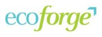
UNDP-GCF / Sri Lanka
Electrifying Colombo's bus fleet
Delivered the Green Climate Fund proposal end to end, funding 161 e-buses.
$81M
proposal
18,311
tCO2e cut
On the public record
MBA from Masters' Union and a Master's in Public Policy from NLSIU. I break messy problems into clear answers, back every recommendation with numbers a founder, funder or board can act on, automate the busywork with AI, and see the work through until it ships.
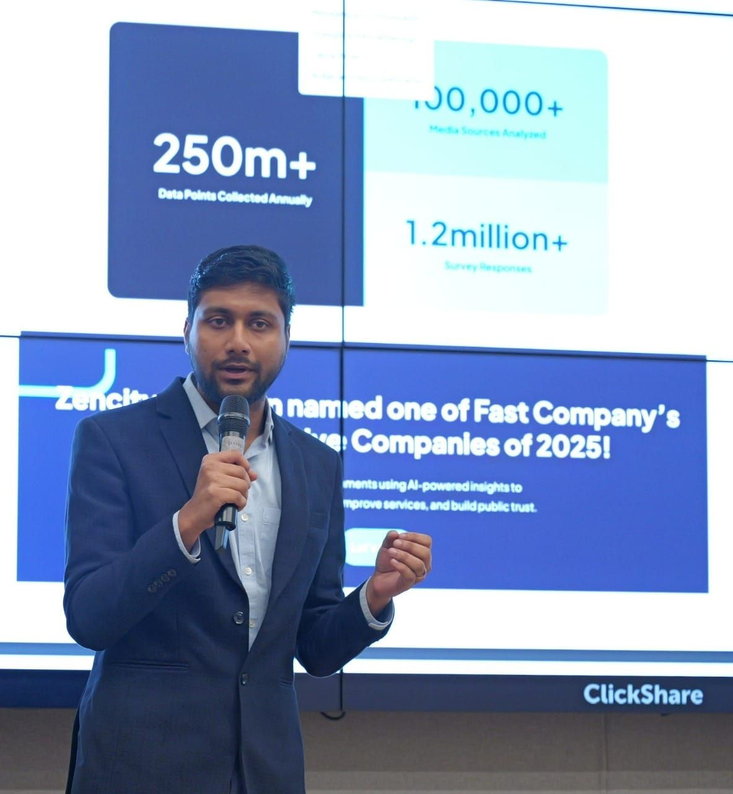
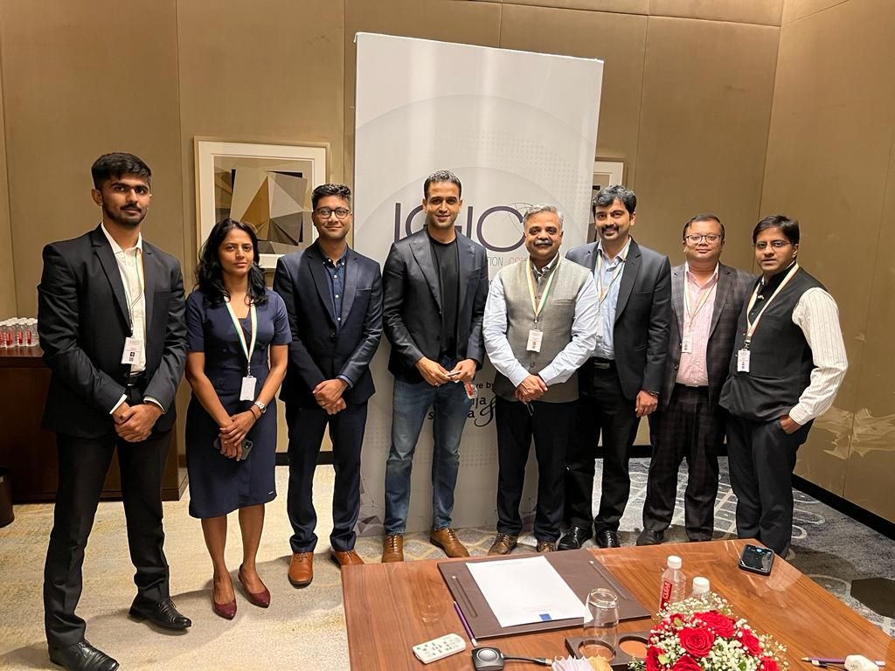
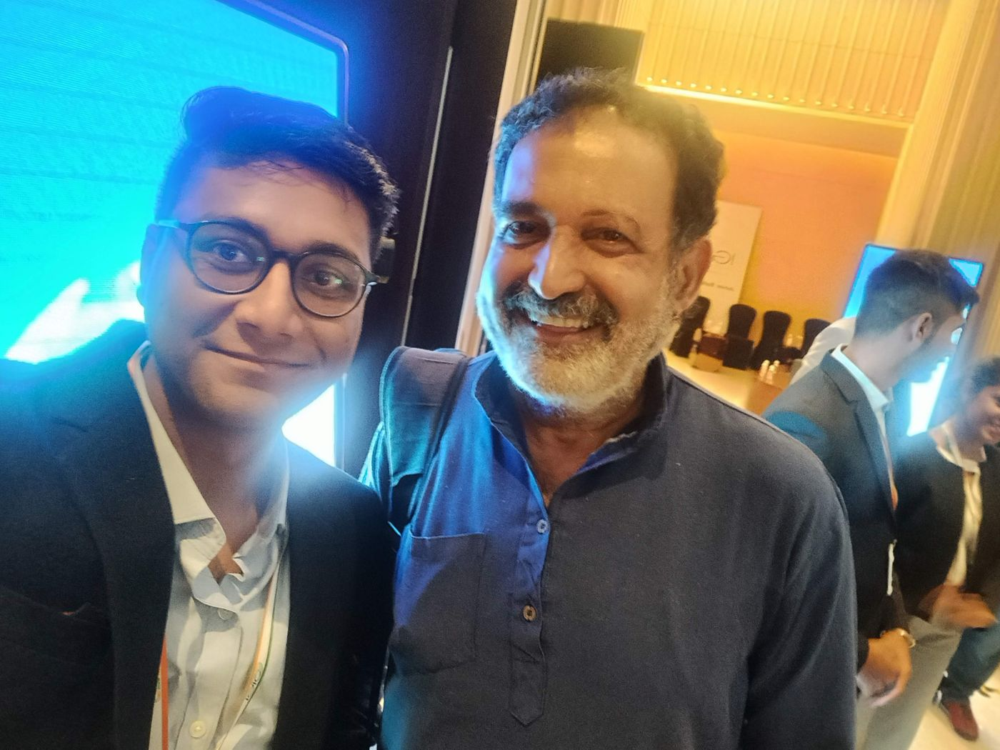
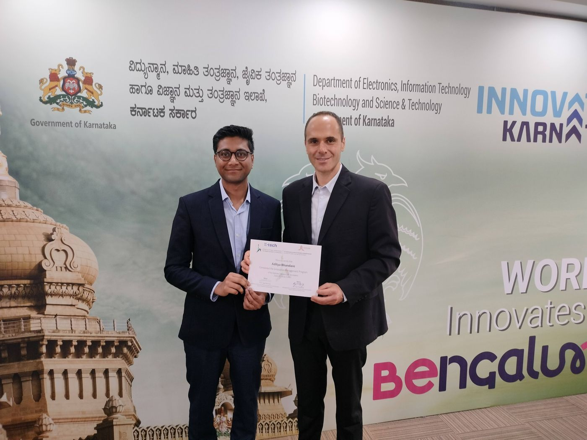
Five things founders hand to their office. Here they are at a glance; below, the work I have already delivered under each.
Turn a programme or a business into a fundable story: the numbers, the risks and a clear ask, written so the funder can say yes.

Delivered the Green Climate Fund proposal end to end, funding 161 e-buses.
Designed the finance programme end to end, mapping how small agri businesses would be onboarded.
Owned end-to-end programme design for Nigeria's Climate Adaptation and Resilience Fund.
Worked on Moldova's energy regulatory sandbox, the first in Central and Eastern Europe, and the African Union's urban resilience programme.
I size the market, talk to customers, map competitors and pressure-test the numbers, then hand the founder one clear recommendation.
Authored the report shaping the state's strategy across insurtech and wealthtech, and ran investment events that drove ₹40 Cr+ in follow-on conversations.
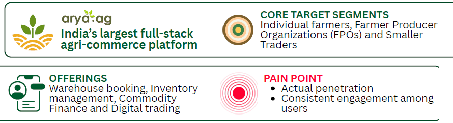
Diagnosed low penetration and engagement, then redesigned the app around five user journeys with role-based onboarding and a 12-month phased rollout.
Talk to the market, find the whitespace and close the partners that unlock it.
Set the market positioning and pricing, benchmarked 10+ FMCG products to land on jaggery as a natural sweetener, and worked with sourcing, packaging and production teams to lift margins.
Market research across 150+ dealers in Noida, Ghaziabad and Gurugram, turned into a national dealer engagement playbook.
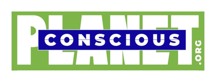
Owned the partnership strategy end to end, brought ITC and RIL on board, and ran aggregation pilots that cut input and logistics costs.
Prototype products and automate repetitive work with AI agents, so ideas get tested in days.
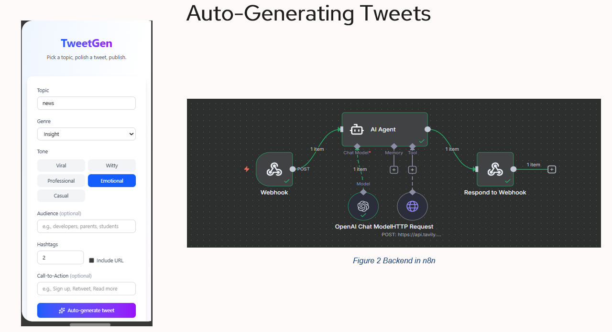
AI tweet writer where you pick a topic, tone and genre, and an agent researches the web live and drafts 3 ready-to-post tweets in your voice, with one-click posting to X.
Auction marketplace where farmers list produce from their phone and verified buyers bid openly, with escrow, grading and a mandi price check.
Road accountability platform for Bengaluru: citizens report damage, every road gets a live score, and each stretch is tied to the contractor who built it.
Weekly dashboards and monthly reviews that show a founder what moved, what stalled and who owns the fix.
Built and ran a weekly dashboard on traction and funding that guided investment decisions, while leading a 5-analyst team.
Ran weekly check-ins and monthly reviews across a 10-member team in 6 verticals, using the numbers to find funnel drop-offs and fix them.
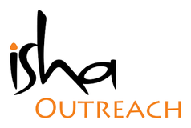
Built structured induction and weekly WhatsApp cadences for a field team and 30+ volunteers, and closed 50+ field partnerships.
How I got here, one step at a time.
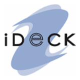
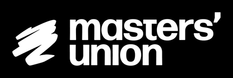
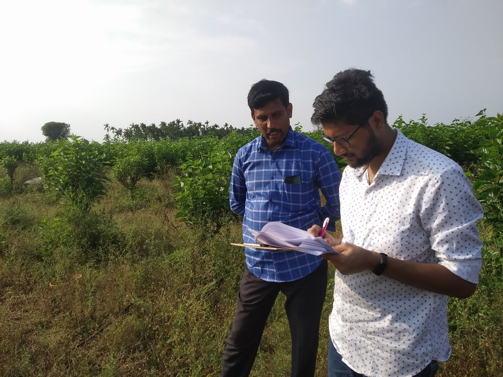
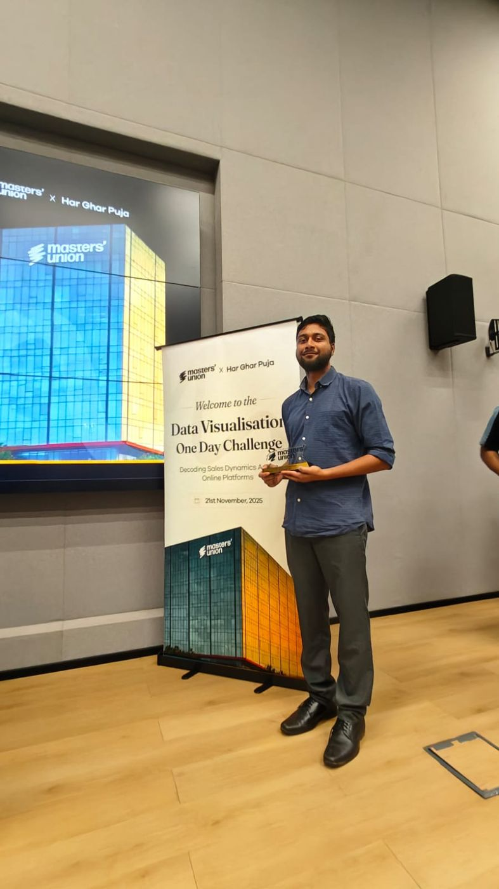
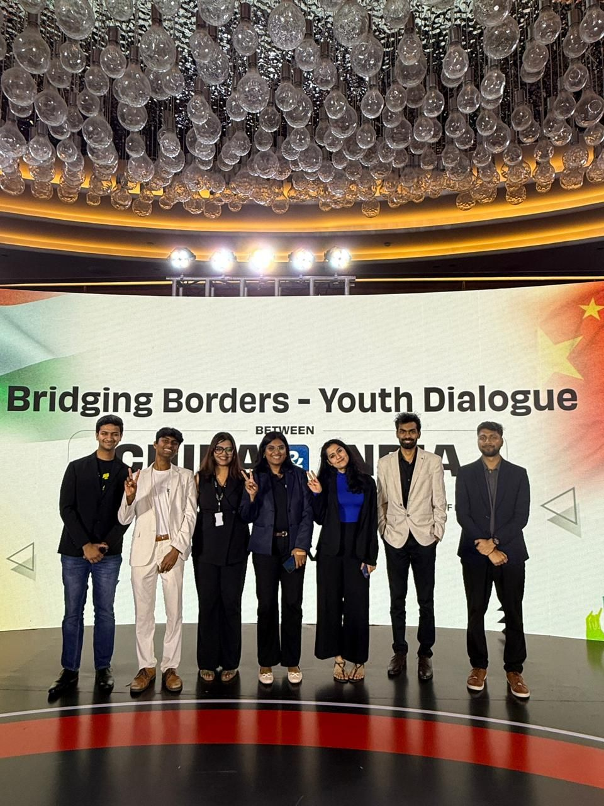
Open to Founder's Office, strategy and climate investing roles.
adityabhandare97@gmail.com